Project 4: Neural Radiance Field
CS180: Intro to Computer Vision and Computational Photography
Project Overview
This project explores Neural Radiance Fields (NeRF), a powerful technique for representing 3D scenes as continuous volumetric functions. I implemented a complete NeRF pipeline from scratch, including camera calibration, ray generation, volume rendering, and neural network training. The project progresses from fitting a simple 2D neural field to an image, to building a full 3D NeRF from multi-view images, culminating in creating my own NeRF from a self-captured dataset.
Part 0: Camera Calibration and 3D Scanning
Overview
In this part, I calibrated my iPhone camera using ArUco tags and captured a 3D scan of my own object.
Part 0.1-0.3: Camera Calibration and Pose Estimation
I captured 45 calibration images and used cv2.calibrateCamera() to compute camera intrinsics.
For the object scan, I captured 52 images of a my teddy bear figure with a single ArUco tag, then used
cv2.solvePnP() to estimate the camera pose for each image. The recovered camera-to-world
transformations allow us to know exactly where each photo was taken in 3D space.
Camera Frustums Visualization
Using Viser, I visualized all camera poses as 3D frustums. The images show the spatial distribution of camera positions around the captured object:
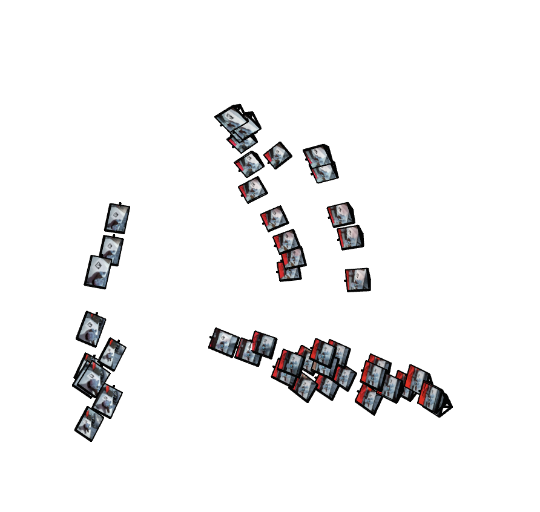
Camera Frustums - View 1
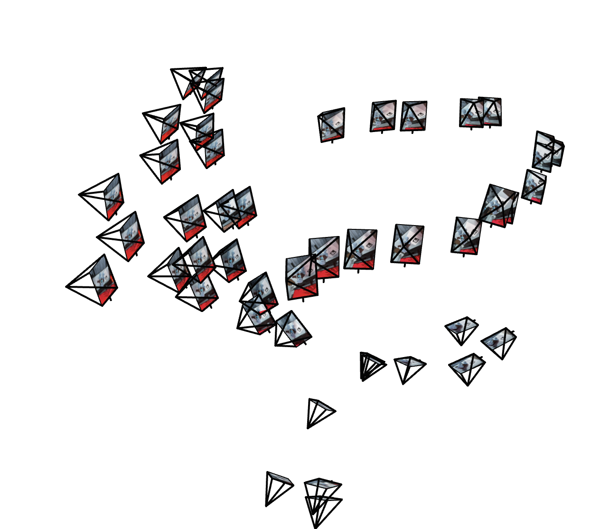
Camera Frustums - View 2
Part 0.4: Dataset Creation
After pose estimation, I undistorted all images using cv2.undistort() and packaged them
into a .npz dataset format. I used cv2.getOptimalNewCameraMatrix() to handle
black boundaries from undistortion, cropping images to the valid ROI and updating the intrinsics matrix
accordingly. The dataset was split into training (40 images), validation (6 images), and test (6 novel views) sets.
Implementation Details:
- Object scan images: 52 images at varying angles around my teddy bear figure
- Tag size: 0.06m x 0.06m
- Camera: iPhone 14 camera (rear camera, no zoom)
Part 1: Fit a Neural Field to a 2D Image
Network Architecture
I implemented a Multi-Layer Perceptron (MLP) with sinusoidal positional encoding to represent a 2D image as a continuous neural field. The network takes 2D pixel coordinates as input and outputs RGB color values.
Model Architecture:
- Input: 2D coordinates (x, y) normalized to [0, 1]
- Positional Encoding: L=10 frequency levels, expanding 2D → 42D
- Hidden layers: 3 layers with width 256
- Activation: ReLU for hidden layers, Sigmoid for output
- Output: RGB values in [0, 1]
- Loss: MSE loss between predicted and ground truth colors
- Optimizer: Adam with learning rate 1e-2
- Training: 2000 iterations with batch size 10,000 pixels
The sinusoidal positional encoding applies the transformation: PE(p) = [p, sin(2⁰πp), cos(2⁰πp), sin(2¹πp), cos(2¹πp), ..., sin(2^(L-1)πp), cos(2^(L-1)πp)] This expands the input dimensionality and enables the network to learn high-frequency details.
Training Results
Test Image Training Progression
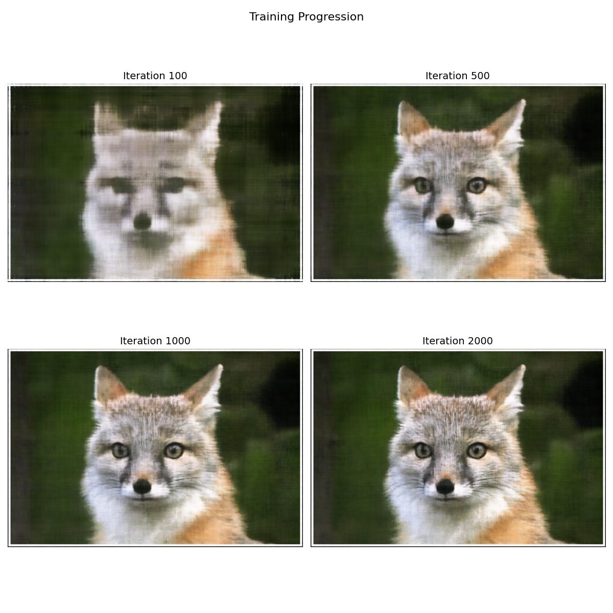
Custom Image Training Progression
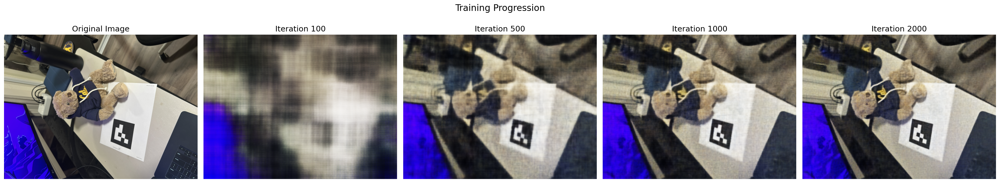
Hyperparameter Analysis
I explored the effect of network width and maximum positional encoding frequency on reconstruction quality.
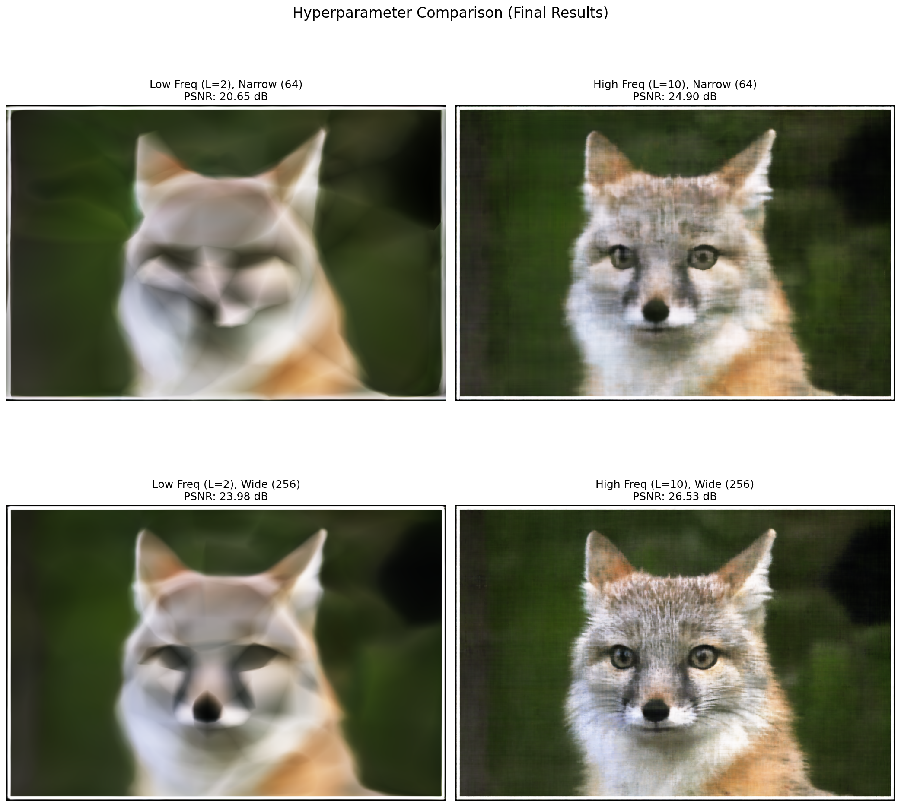
2x2 grid showing results for different (L_max, width) combinations: (2, 64), (2, 256), (10, 64), (10, 256).
PSNR Curve
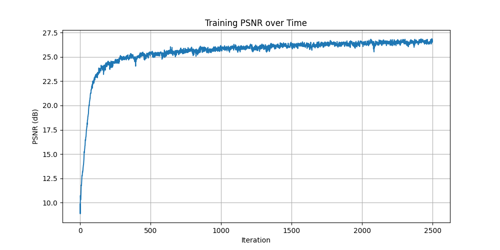
Part 2: Fit a Neural Radiance Field from Multi-view Images
Part 2.1: Create Rays from Cameras
I implemented three key transformations to convert pixel coordinates to 3D rays:
Transformation Pipeline:
- Camera-to-World Transform:
x_world = c2w @ x_cameraconverts points from camera space to world space using the 4×4 extrinsic matrix - Pixel-to-Camera: Given pixel (u, v) and depth s, compute
x_camera = K^(-1) @ [u*s, v*s, s]to get 3D camera coordinates - Pixel-to-Ray: Ray origin is camera position
c2w[:3, 3], ray direction is normalized vector from origin through pixel at depth=1
Part 2.2: Sampling Points Along Rays
I sample 64 points along each ray between near=2.0 and far=6.0 planes.
Part 2.3: Visualization of Rays and Samples
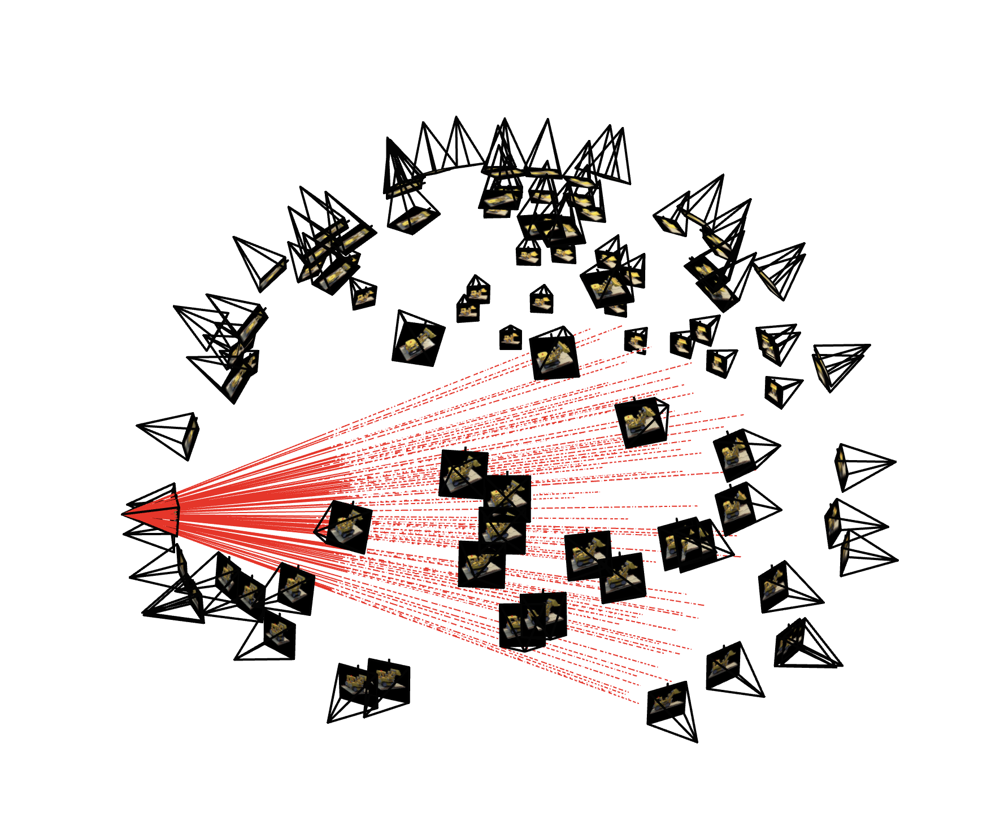
Visualization of 100 sampled rays (shown as lines) with sample points (shown as white dashes along the lines) in 3D space.
Part 2.4: Neural Radiance Field Architecture
The NeRF MLP takes 3D position and 2D viewing direction as input, outputting volume density (σ) and RGB color. The architecture uses skip connections and separate branches for density and color prediction.
NeRF Network Architecture:
- Position encoding: L=10 (3D → 63D)
- Direction encoding: L=4 (3D → 27D)
- Position branch: 63D → 256 → 256 → skip(+63D) → 256 → 256
- Density head: 256 → 1 (with ReLU activation)
- Color branch: 256 + 27D direction → 128 → 3 (with Sigmoid)
- Skip connection: Concatenate input at layer 4 to preserve high-frequency details
Part 2.5: Volume Rendering
I implemented the discrete volume rendering equation to composite colors along each ray. For each sample point, we compute transmittance (probability ray reaches that point without hitting anything) and alpha (probability of terminating at that point).
Lego NeRF Training Results
Training Progression
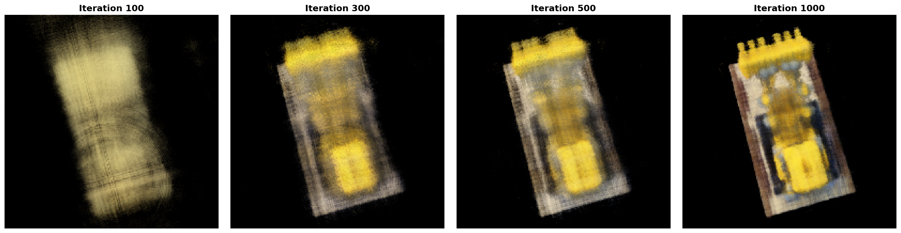
Novel view rendering at iterations 0, 250, 500, 750, and 1000. The NeRF progressively learns the 3D structure and appearance of the lego bulldozer.
Validation PSNR Curve
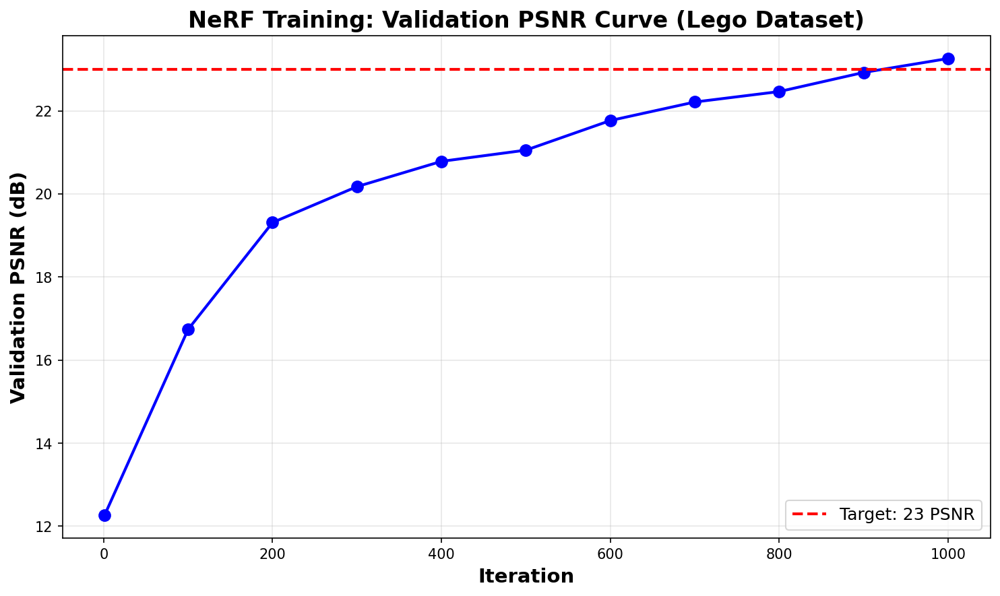
PSNR on validation set improves steadily, reaching 23+ dB after 1000 iterations. My implementation used Adam optimizer (lr=5e-4) with 10K rays per batch.
Novel View Synthesis
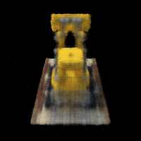
Spherical rendering using the 60 test camera poses.
Training Details:
- Dataset: 100 training images (200×200 pixels)
- Batch size: 10,000 rays per iteration
- Iterations: 1000 gradient steps
- Optimizer: Adam with learning rate 5e-4
- Samples per ray: 64 points between near=2.0 and far=6.0
- Final PSNR: 23.4 dB on validation set
- Training time: ~10 minutes on Apple M3 MPS
Part 2.6: Training NeRF on My Own Data
Overview
Using the dataset I created in Part 0, I trained a NeRF on my teddy bear figure. Unfortunately, the results were too horrific to show in this report. I decided to use the Lafufu dataset released by staff instead.
Hyperparameter Changes:
- Near/far planes: Changed from (2.0, 6.0) to (0.35, 0.75)
- Samples per ray: Increased from 32 to 64
- Training iterations: Extended to 3000 iterations for full convergence
- Learning rate: Used 5e-4 (same as Lego)
Training Progression
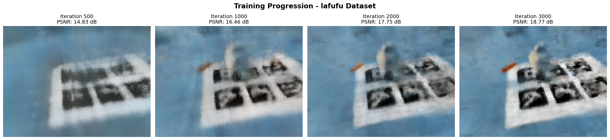
Training Loss Curve
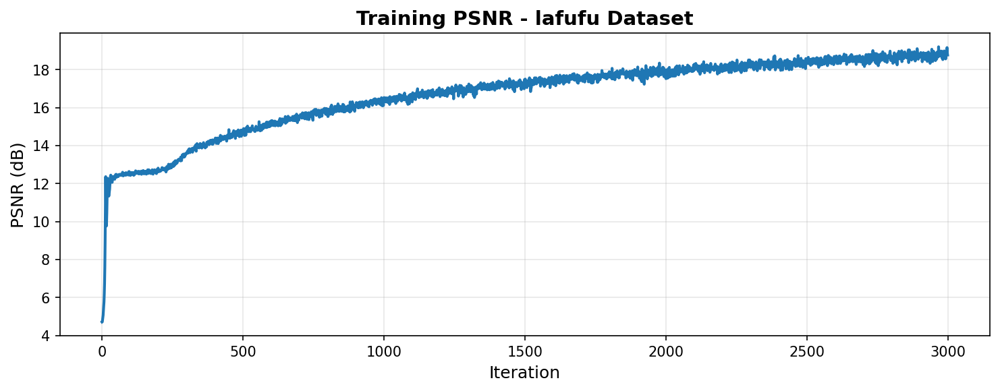
Novel View Synthesis
.gif)
Novel view synthesis showing the Labubu figure from a vertical rotation.